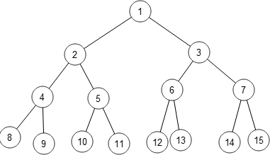
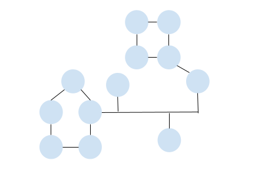

Fully Connected Topology
In a fully connected topology,every node in the network is directly connected to every other node. It is a network configuration where there is a direct link or communication channel between every pair of nodes.

Graph theory is the study of relationships. Given a set of nodes and connections, which can abstract anything from city layouts to computer data, graph theory provides a helpful tool to quantify and simplify the many moving parts of dynamic systems.
In graph theory, a tree is an undirected graph in which any two vertices are connected by exactly one path, or equivalently a connected acyclic undirected graph.
A star topology is a network configuration in which all nodes are connected to a central node called the "hub." The hub acts as a central point of communication, and all other nodes in the network are connected directly to the hub.
A ring topology is a network configuration in which the nodes are connected in a closed loop or ring formation. Each node in the network is connected to exactly two other nodes, forming a circular structure. In a ring graph, data travels in only one direction around the ring.
Bus topology is a network configuration in which all devices are connected to a single communication pathway called a "bus." In this topology, each device is directly connected to the bus, and data is transmitted along the bus to all devices connected to it.
In a fully connected topology,every node in the network is directly connected to every other node. It is a network configuration where there is a direct link or communication channel between every pair of nodes.
Mesh topology is a network configuration where devices are interconnected with multiple direct links, forming a network in which every node has a direct connection to every other node. In a mesh network, each device can communicate with any other device directly, without relying on intermediate nodes.
